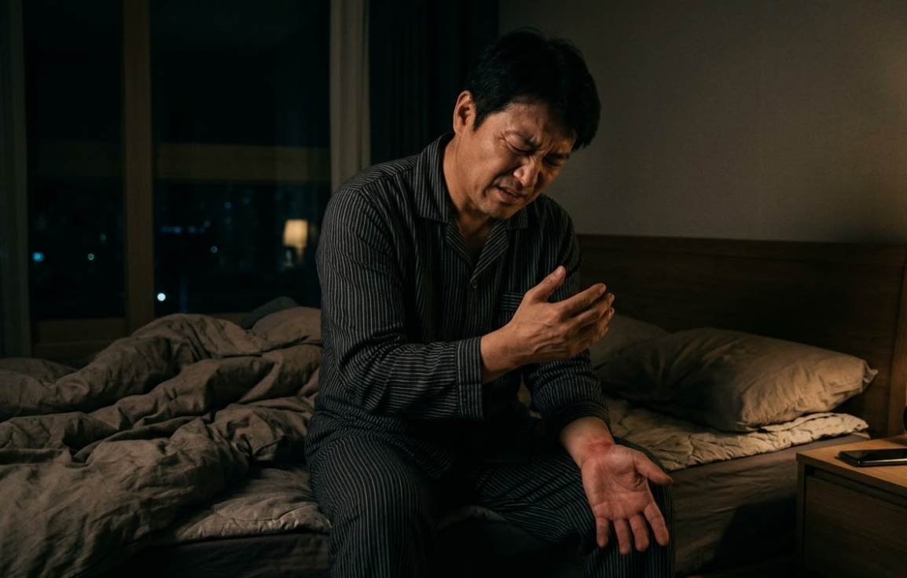
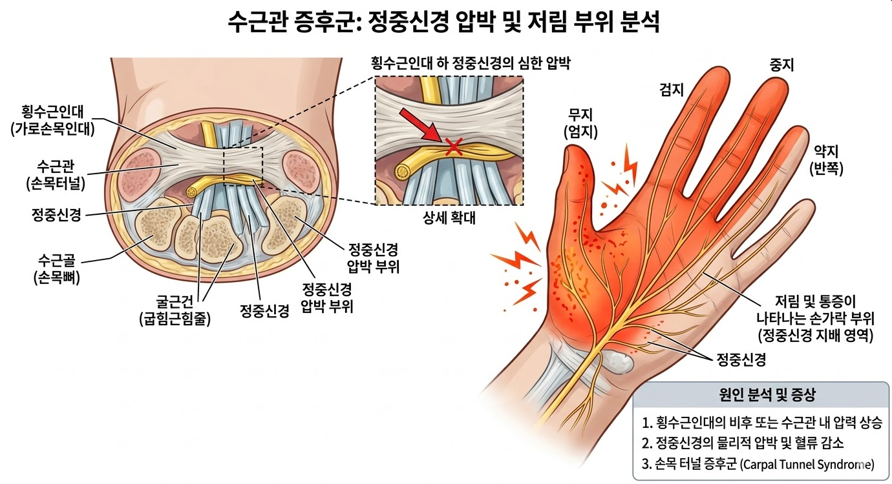

"자다가 손이 저려 털면서 깨시나요? 인계동한의원 손목터널증후군 탈출법"

💡 바디올 30초 핵심 요약
1. 손목터널증후군은 손목 내부 신경 통로가 좁아져 정중신경을 압박하며 발생합니다.
2. 단순 피로로 방치하면 감각 마비나 근육 위축이 올 수 있어 빠른 통로 확장 치료가 중요합니다.
3. 바디올은 도침 터널 확장 + SART/추나 정렬로 신경 압박을 근본적으로 해소합니다.
1. 나의 손목 상태, 혹시 증후군일까?
수원한의원 바디올을 찾는 많은 분이 '저린 증상'을 호소하십니다. 아래 항목 중 해당 사항이 있는지 확인해 보세요.
- 밤이 되면 손이 저리고 찌릿해서 잠을 설치고, 손을 털어야만 나아진다.
- 엄지부터 약지의 절반 정도까지 감각이 무디거나 저린 느낌이 든다.
- 갑자기 손에 힘이 빠져 컵을 떨어뜨리거나 단추를 채우는 게 힘들다.
- 손목 바닥 쪽을 톡톡 쳤을 때 손가락 끝까지 전기가 오는 듯한 느낌이 있다.
2. 메커니즘 분석: 왜 손가락까지 저린 걸까?
손목 안에는 정중신경이 지나는 좁은 '터널'이 있습니다. 반복적인 사용으로 인대가 두꺼워지면 이 터널이 좁아지며 신경을 짓누르게 됩니다. 특히 거북목 등 경추 정렬이 좋지 않으면 신경의 뿌리가 이미 예민해져 손목 증상이 더욱 심해집니다.

3. 바디올의 통합 치료 솔루션 (Total Care)
인계동한의원 바디올은 터널의 압박을 직접 해소하고, 신경의 전체적인 흐름을 개선합니다.
① 바디올 특화 치료: 통로 확장 및 정렬
• 도침치료(유착박리술): 신경을 누르는 단단한 횡수근인대를 미세 박리하여 터널 내부 압력을 즉각 낮추는 핵심 치료입니다.
• 공간척추교정(SART) / 추나요법: 손목 신경의 시작점인 경추(목뼈) 정렬을 바로잡아 상체 사슬 구조의 밸런스를 회복시킵니다.
② 바디올 종합 기초 치료: 신경 재생 및 소염
• 종합 치료 솔루션: 침 치료와 고농도 봉약침으로 신경 주변 염증을 제거하고, 부항과 전자뜸으로 근육 이완을 돕습니다.
• 현대 물리치료: ICT와 TENS 기기로 손목 주변 통증 신경을 안정시키고 회복을 촉진합니다.

4. 재발 방지를 위한 생활 수칙
- 손목 스트레칭: 손바닥을 앞을 향해 펴고, 반대쪽 손으로 손가락을 천천히 몸쪽으로 당겨 터널 부위를 부드럽게 늘려주세요.
- 경추 위생 스트레칭: 어깨와 목의 정렬이 손목 건강의 시작입니다. 가슴을 펴고 고개를 뒤로 젖히는 동작을 수시로 반복하세요.